YT 심리발달 아카데미
YT 심리발달 아카데미
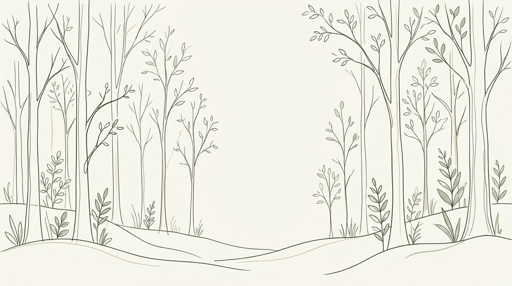
10년 임상 현장에서 마주한 깨달음과 치열한 고민으로 세운
YT 심리발달 아카데미의 설립 철학입니다.
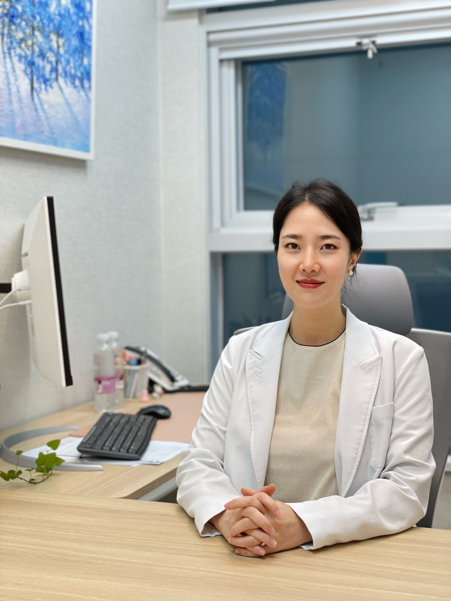
YT 심리발달 아카데미 총괄 디렉터 • 10년 차 아동발달 임상 전문가
안녕하세요. YT 심리발달 아카데미 원장 이미지입니다.
10년간 임상 현장에서 수많은 아이들과 부모님들을 마주하며, 치료실 안의 변화가 일상으로 온전히 이어져야 한다는 확신을 갖게 되었습니다.
“치료실 문을 나서는 순간 사라지는 기술은 온전한 변화가 아닙니다.”
진정한 성장은 아이 개인의 교정을 넘어 가정, 학교, 양육 태도까지 주변의 모든 삶의 환경이 유기적으로 통합될 때 비로소 일어납니다.
이 확신 아래 연세나무 소아청소년정신건강의학과 치료실이 독립 연구기관 ‘YT 심리발달 아카데미’로 출범하였습니다. 과학적 근거를 바탕으로 치료, 교육, 상담, 평가, 수련이 결합된 전문 아카데미 시스템을 제공합니다.
실제 학교 규격의 모의 교실 훈련으로 가정과 학교에서의 자립 기술을 체화합니다.
병원 환경에서 심도 있게 다루기 어려웠던 심층 평가, 다학제 치료, 지속적인 부모 코칭을 데이터로 표준화합니다.
온·오프라인 소통을 바탕으로 아이에게 필요한 결정적 순간 현장에서 함께합니다.
과학적으로 입증된 체계적이고 통합된 서비스를 YT 심리발달 아카데미에서 온전히 누리실 수 있도록 정성을 다하겠습니다.
YT 심리발달 아카데미 대표원장 이미지 올림
단기 프리랜서 채용 없이 2년 도제식 수련을 거친 정예 연구진이 직접 치료합니다.
미국 BACB 공인 보수교육(ACE Provider) 및 사단법인 한국응용행동분석전문가협회(KACBA) 공식 회원기관으로서 국내외 최고 수준의 임상 전문성을 유지합니다.
2년간 이미지 원장님의 1:1 밀착 도제 수련을 거치며 현장 노하우를 전수받습니다. 연구진 전원이 사례를 공동 관리하며 정예 치료사진을 직접 양성합니다.
치료실 내 주간 사례 관리를 의무화하고, 연세나무 소아청소년정신과 전문의와 매달 정기 협력 회의를 통해 다학제 집단 지성으로 최적의 치료 방향을 도출합니다.
미국 BACB 공인 공식 보수교육(ACE Provider) 및 사단법인 한국응용행동분석전문가협회(KACBA) 정식 회원기관으로, 행동치료 전문가 대상 공식 보수교육(CEU)을 주관하며 공인된 자격 기준을 준수하는 전문 치료사를 직접 양성합니다.
미국 BACB 공식 ACE Provider(공인 보수교육 제공기관)이자 사단법인 한국응용행동분석전문가협회(KACBA) 공식 회원기관으로서 국내외 최고 수준의 임상 전문성과 공신력을 검증받았습니다.
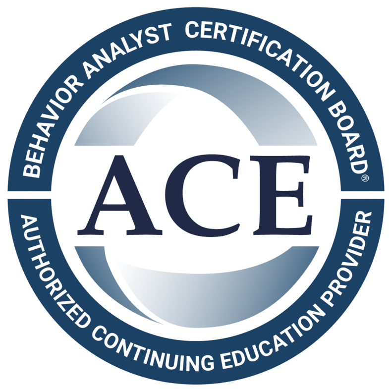
미국 BACB의 엄격한 심사를 거쳐 국제공인 행동분석가(BCBA) 대상 공인 보수교육(CEU)을 직접 주관하고 이수 증명을 발행하는 공식 인가 기관입니다.
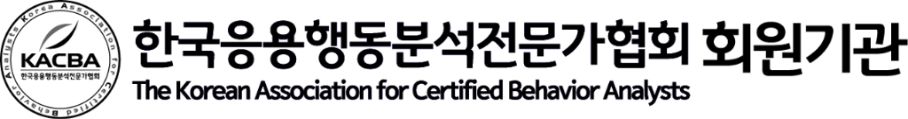
사단법인 한국응용행동분석전문가협회(KACBA)의 정식 회원기관으로서 행동분석 전문가(QBA/ABAS) 윤리 강령을 준수하고 국내 행동치료 임상 표준을 선도합니다.
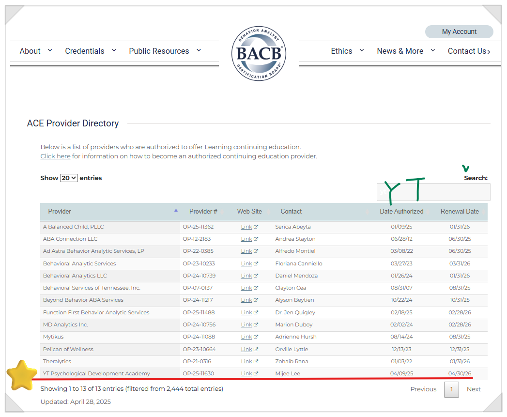
미국 BACB 글로벌 디렉토리 검색창에 'YT' 입력 시, 'YT Psychological Development Academy'로 공식 인가 번호와 함께 전 세계 보수교육 제공기관 리스트에 정식 등재되어 있음을 누구나 투명하게 확인하실 수 있습니다.
치료·교육·상담·평가·수련·공인 보수교육을 모두 갖춘 전문 아카데미로서 국내외 공인 기관의 엄격한 기준에 부합하는 타협 없는 임상 전문성과 진심으로 보답하겠습니다.
행동과학(ABA)과 임상심리·언어·놀이 전문가가 협력하여 다각도에서 아동의 성장을 설계합니다.
국제공인 행동분석가(BCBA)가 주도하는 주간 케이스 컨퍼런스를 통해, 개별 아동의 목표 달성률과 행동 중재 플랜을 정밀하게 교차 검증합니다.
단순한 주관적 느낌이 아닌, 매 회기 아동의 반응 데이터를 수집·분석하여 체계적인 누적 진도 차트로 성장을 가시화합니다.
치료실 안에서의 긍정적 변화가 가정과 일상 교실로 자연스럽게 일반화될 수 있도록 매 세션 심층 브리핑과 실전 양육 솔루션을 제공합니다.
하남미사 본원 4층, 임상 치료사진이 직접 아이들의 눈높이에 맞추어 설계한 실제 치료실 내부를 둘러보세요.
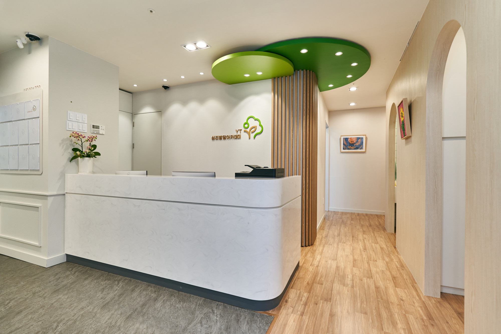
🌿 로비 스테이션원목 벽나무 조형과 부드러운 라운드 곡선 벽면으로 아이와 부모님께 심리적 안정감을 선사합니다.
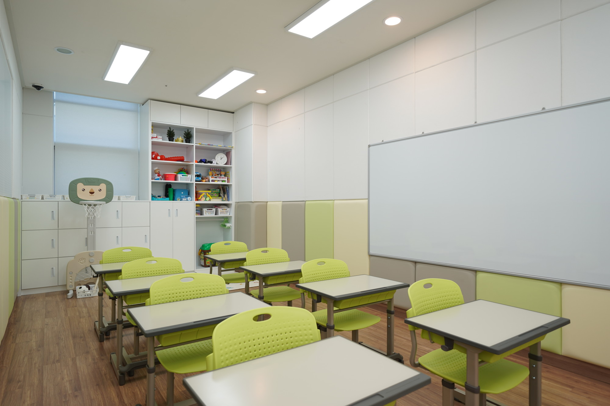
🏫 학교준비반 모의 교실눈의 피로를 덜어주는 저반사 높이조절 초등 책걸상으로 실전 학교 적응 훈련을 진행합니다.
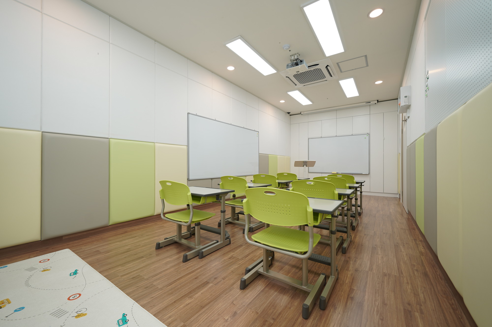
🎬 시청각 모의 환경정면·측면 2개 칠판과 빔 스크린을 통해 개별 집중 및 원형 둘러앉기 등 다채로운 수업을 지원합니다.
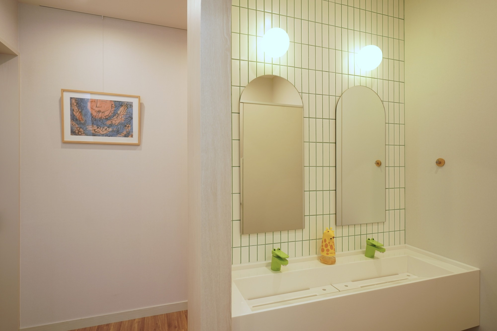
🚰 자조기술(ADL) 훈련아이 눈높이에 맞춘 세면대와 급작스러운 고온 방지 안전 설계로 손씻기·양치 독립 루틴을 익힙니다.
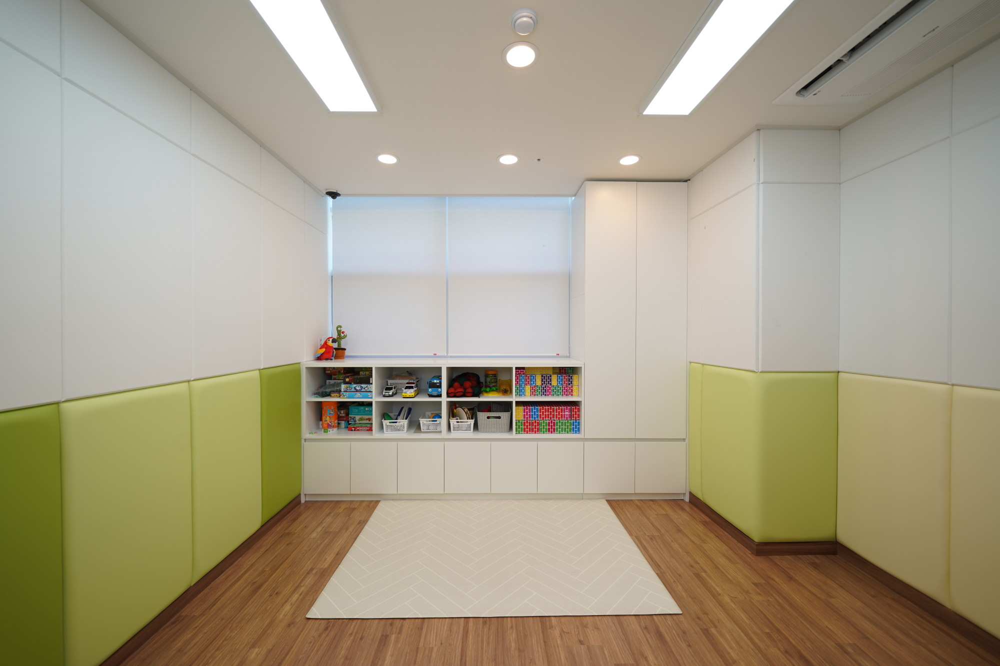
🛡️ 안전 & 방음벽 풀시공하부 충격 방지 안전 패딩과 상부 전면 방음 흡음재를 둘러 부상 걱정 없이 몰입할 수 있습니다.
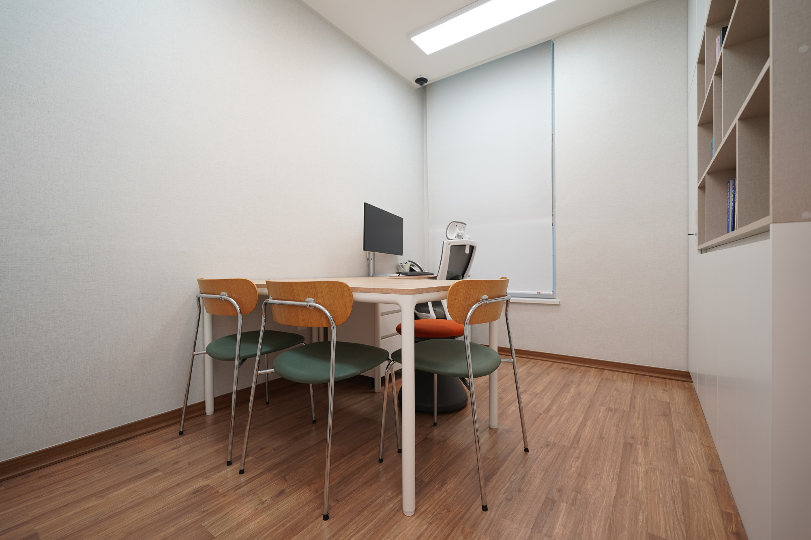
🤝 소그룹 사회기술실또래 간의 자연스러운 눈 맞춤과 규칙 공유, 양보 협상을 안전하게 연습하는 맞춤형 공간입니다.